色ツヤ工房 使用手引書
lilToon アバターの明るさ・色味・陰影・ツヤを、部位ごとに調整します
- 全体の明るさや色味を、4本のスライダーで整えます。
- 顔・髪・衣装など、気になる部分だけ調整できます。
- 写真寄り・アニメ寄り・温かい感じなどのプリセットを、押すだけで当てられます。
- 光や雰囲気を試し、自動保存した続きから再開できます。
まずは「始め方」から進めてください。分からなくなったら、目次から「困ったとき」へ戻れます。画像を押すと、大きく見られます。窓の［使用手引書］から、この手引書を開けます。
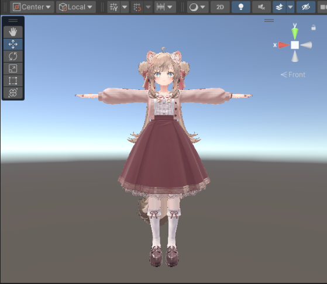
この手引書は、色ツヤ工房 0.6.0-preview.1 の画面に合わせています。「プリセットで整える」の章は、1.1.0 の画面です。画像のモデルは MANUKA と ReTulpe for Manuka pink です。
必要なもの
- Unity 2022.3 で、VRChat の BRP のプロジェクトを開きます。
- lilToon と、3D 創作スタジオを入れておきます。
- 調整したいアバターをシーンに置き、衣装も表示しておきます。
動作を確かめた lilToon は 2.4.1 です。ほかの版でも、版の警告が出るだけなら始められます。下の画像は 2.3.4 の警告です。lilToon が入っていないと、始められません。
補足：URP では、プロジェクトの描画方式に合う環境が必要です。
始め方
- Unity のメニューで
Tools/Irotsuya Koubo/Openを押します。ほかの工房が開いているときは、上の切り替えの行の［色ツヤ工房］からも開けます。 - Hierarchy（シーンの中の物の一覧）から、衣装を含むアバター全体を、［アバター］の欄へ入れます。
- ［写真寄り］か［アニメ寄り］を選びます。迷ったら、写真寄りから試せます。
- ［照明の数］を選びます。最初は8です。0なら照明を置きません。後からも変えられます。
- ［調整を始める］を押します。編集用の複製ができ、調整の画面に切り替わります。
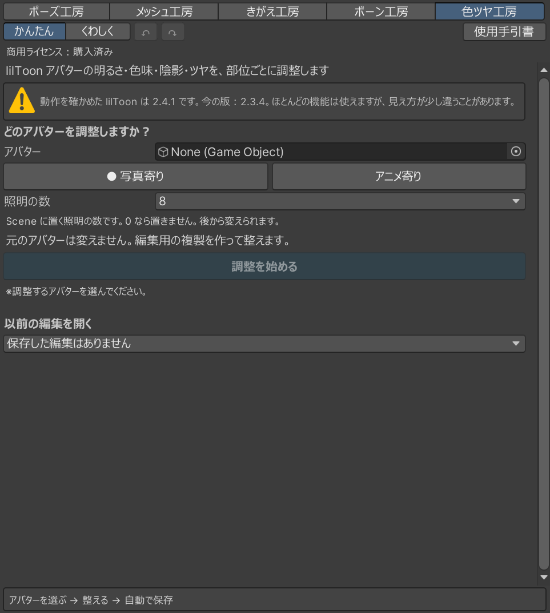
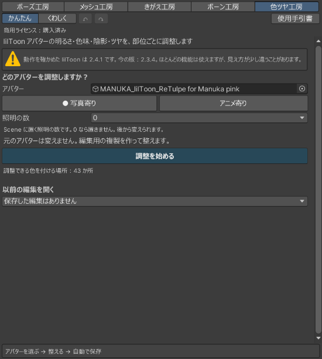
元のアバターは変わりません。編集用の複製を見ながら、少しずつ試してください。
かんたんで整える
- 上の［かんたん］を押します。
- ［写真寄り］か［アニメ寄り］を試し、近づけたい雰囲気を選びます。雰囲気を変えると、調整値も変わるので、先に選ぶと進めやすくなります。ほかのプリセットも試すときは、「プリセットで整える」を見ます。
- 次の4本を少しずつ動かし、Scene（アバターを見る画面）で確かめます。
| スライダー | 整えること |
|---|---|
| ［全体の明るさ］ | アバター全体を、暗く・明るくします。 |
| ［全体の色味］ | 冷たい色・暖かい色へ寄せます。 |
| ［全体の陰の濃さ］ | 陰を、薄く・濃くします。 |
| ［全体のつや］ | つやを、控えめ・強めにします。 |
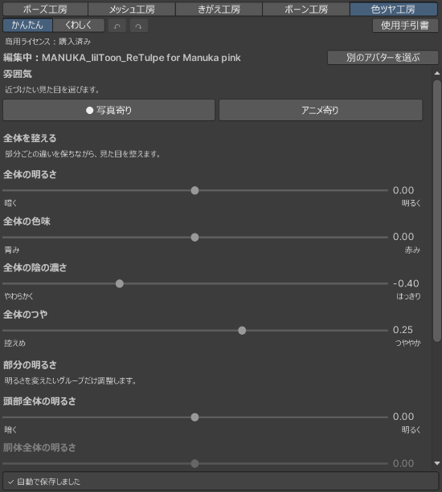
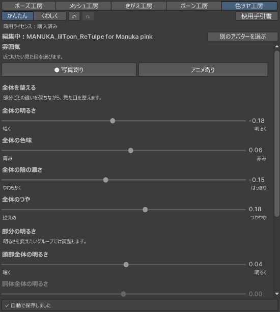
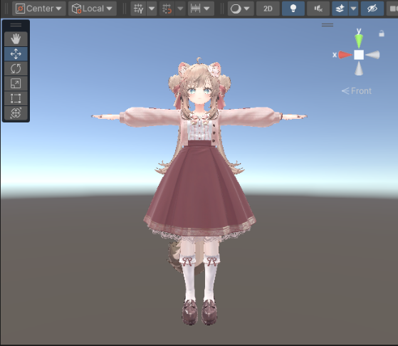
一部分だけ明るくしたい
下へスクロールして、「部分の明るさ」を使います。［頭部］［胴体］［腕・手］［脚・足］［衣装・付属物］の5つのグループごとに変えられます。全体の調整に、部分の調整が重なります。
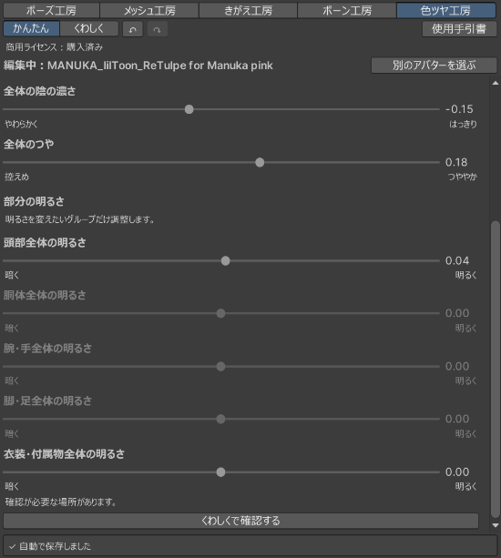
変えすぎたら戻す
上の［くわしく］へ切り替えると、スライダーの横に［戻す］が出ます。その項目を始めの見た目へ戻せます。部分の［戻す］では、全体やグループの調整は残ります。直前の操作を取り消すときは上の［↶］、取り消した操作をやり直すときは［↷］を押します。
くわしくで整える
上の［くわしく］を押すと、4つのタブが出ます。かんたんと同じ編集なので、切り替えても値は残ります。
［全体を整える］
部分ごとの違いを保ちながら、全体の明るさ・色味・陰の濃さ・つやを整えます。
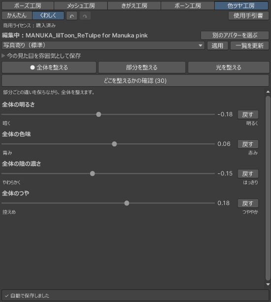
［部分を整える］
- ［調整するグループ］で、頭部や衣装などを選びます。
- 部位のボタンで、顔や髪などを選びます。
- その場所のスライダーを動かします。グループ全体と個別の部位は、別々に調整できます。
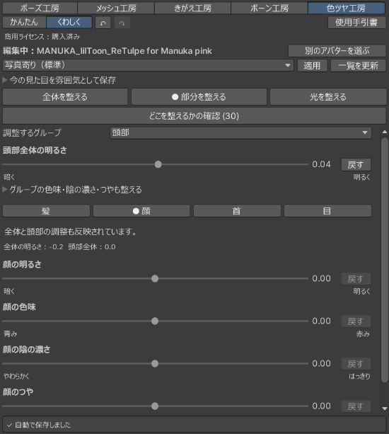
［光を整える］
［照明の数］は、0〜32を4灯ずつ選べます。［光全体の強さ］と［光を整える場所］で、全体やグループごとの光を変えます。光の向きは、アバター自身から見た左右です。
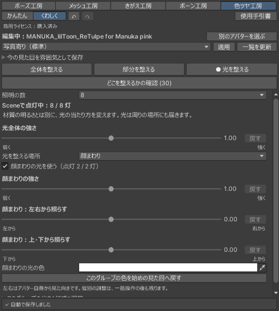
1灯ずつ変えるときは、［このグループの光を1灯ずつ調整］を開きます。戻るときは［グループ全体の調整に戻る］を押します。材質の陰の濃さと、光が床や体に落とす影は別の設定です。
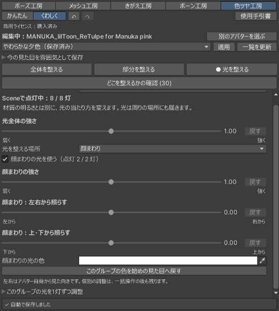
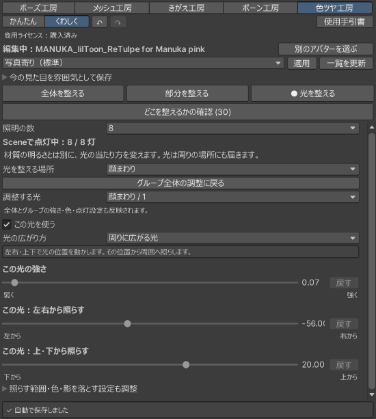
［どこを整えるかの確認 (30)］
かっこの数は、確認が必要な場所の数です。画像では30件です。狙った場所が変わらないときは、このタブで、色を付ける場所と部位の対応を確かめます。確認待ちが0件のときは、［すべての場所を表示（自動候補・確認済みを含む）］に印を付けます。［Sceneで場所を選ぶ］で場所を見て、部位を選び、［この部位で確定］を押します。
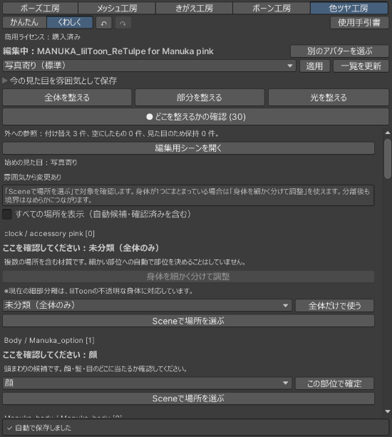
身体が1つにまとまっているときは、使える場合に［身体を細かく分けて調整］が出ます。押せないときは、その下の理由を確かめます。
プリセットで整える
上の［プリセット］を押すと、雰囲気のプリセットが縦に並びます。押すだけで、明るさ・色味・陰・つやをまとめて変えられます（1.1.0 以降）。
- 上の［プリセット］を押します。［くわしく］の右隣りにあります。
- 使いたいプリセットを押します。今の編集に当たり、選んだものに「●」が付きます。
- Scene で確かめます。ほかのプリセットも、押して比べられます。元に戻すときは、上の［↶］を押します。
- さらに整えるときは、［かんたん］か［くわしく］へ切り替えます。プリセットを当てた見た目から、続けて調整できます。
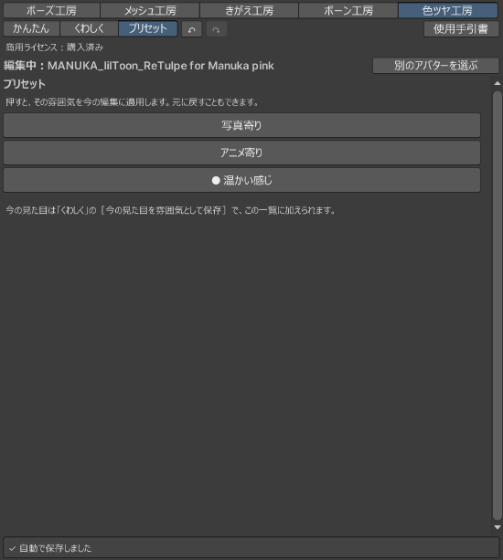
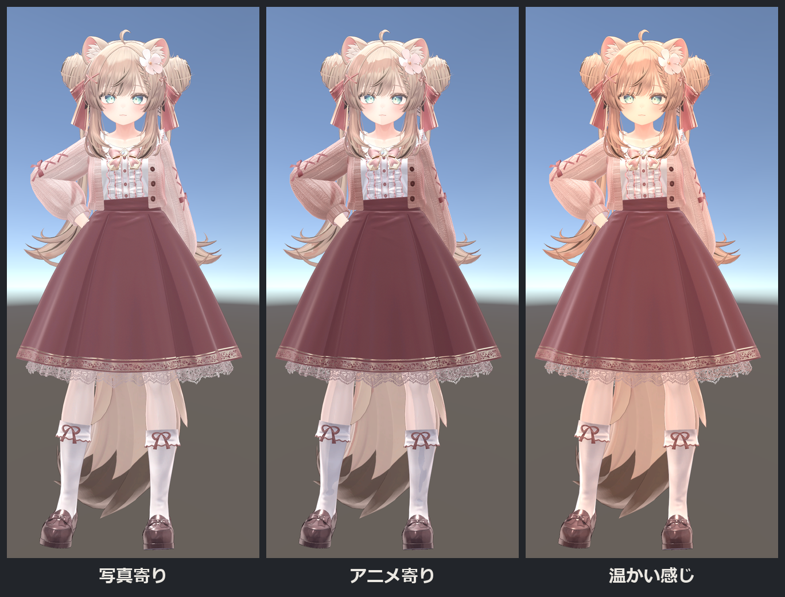
プリセットは、今後の更新で増えます。画面の一覧が、この手引書の画像より多いことがあります。使い方は、どのプリセットも同じです。
自分で保存した雰囲気も、この一覧に出ます。保存のしかたは「保存と再開」の「今の雰囲気を残す」にあります。ポーズ工房 1.6.0 以降では、ポーズ工房の［プリセット］からも、同じプリセットを呼び出して撮影できます。
保存と再開
自動で保存されます
スライダーを変えると、自動で保存されます。窓の下が「✓ 自動で保存しました」になるまで待ってから、窓を閉じます。保存できていないときは、理由を確かめて［保存を再試行］を押します。
続きから再開する
- 色ツヤ工房を開き直します。前の編集がそのまま出たら、続けて調整できます。
- 開始画面が出たときは、「以前の編集を開く」から、保存した編集を選びます。
- 編集用シーンが閉じている案内が出たら、［編集用シーンを開く］を押します。
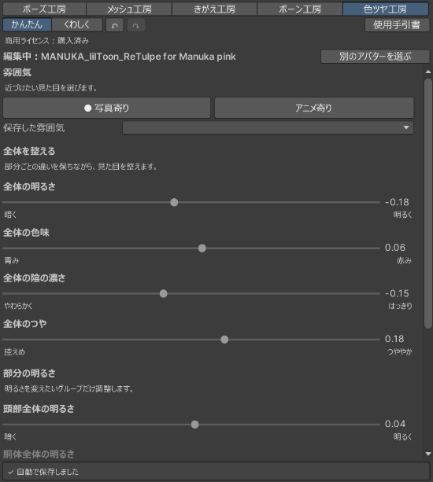
今の雰囲気を残す
- ［くわしく］に切り替え、［今の見た目を雰囲気として保存］を開きます。
- ［保存する名前］を入れ、［別名で保存］を押します。
- 後で使うときは、上の［雰囲気］の欄から選んで［適用］を押します。見つからないときは［一覧を更新］を押します。上の［プリセット］の一覧からも選べます。
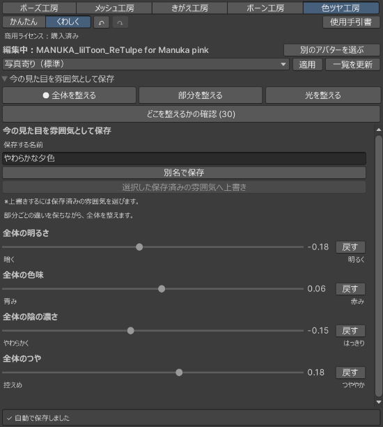
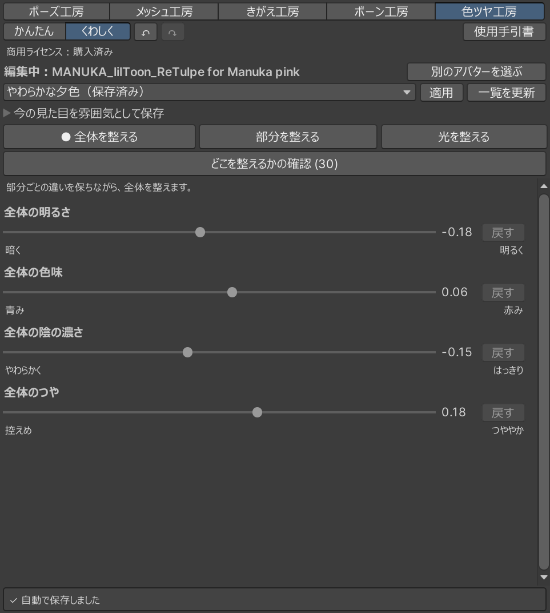
雰囲気は、見た目の設定のひとまとまりです。編集中のアバターや編集の続きは、自動保存の編集データに残ります。元のアバターは変わりません。
困ったとき
lilToon が無い・版の警告が出る
lilToon が無いときは、先にプロジェクトへ入れてください。2.4.1 以外の版の警告だけなら始められます。見え方が少し違う場合があるので、少しずつ試します。
「外への参照」と出る
衣装などが、アバターの外にある物を指していたというお知らせです。色ツヤ工房は編集用の複製の中だけを直し、元は変えていません。見た目のために残した参照がある場合は、件数も表示します。衣装や体の見え方を確かめてください。
編集データはどこにある？
Project（ファイルの一覧）の Assets/GP23Sessions にあります。編集用シーンや材質も一緒にあるので、途中のファイルだけを動かしたり、消したりしないでください。
元に戻したい
- 直前の変更は、上の［↶］で戻します。
- 1項目だけ戻すときは、［くわしく］に切り替え、その横の［戻す］を押します。
- 元のアバターを見るときは、［別のアバターを選ぶ］で編集を離れ、元のシーンに戻ります。元のアバターは変更されていません。
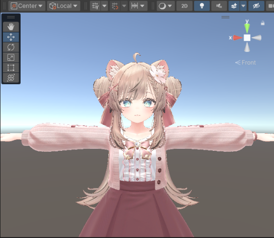
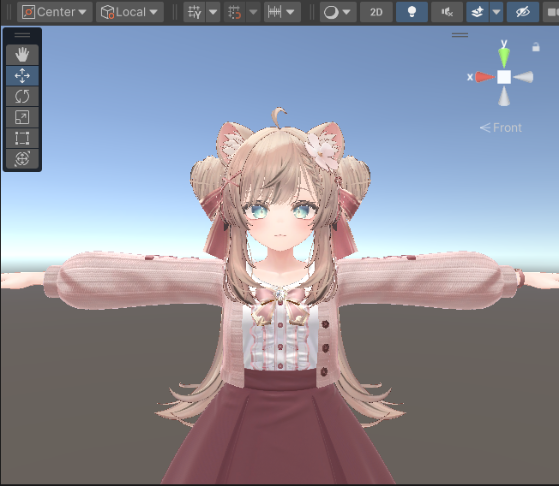
商用ライセンス
個人利用は無料です。作った物を売るときは商用ライセンスが必要です。